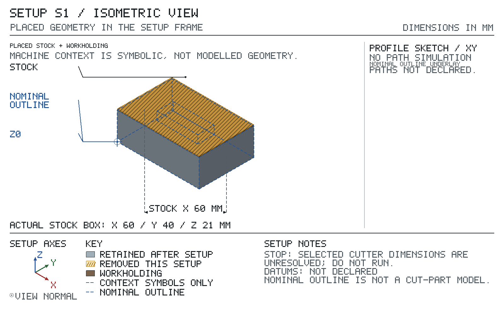
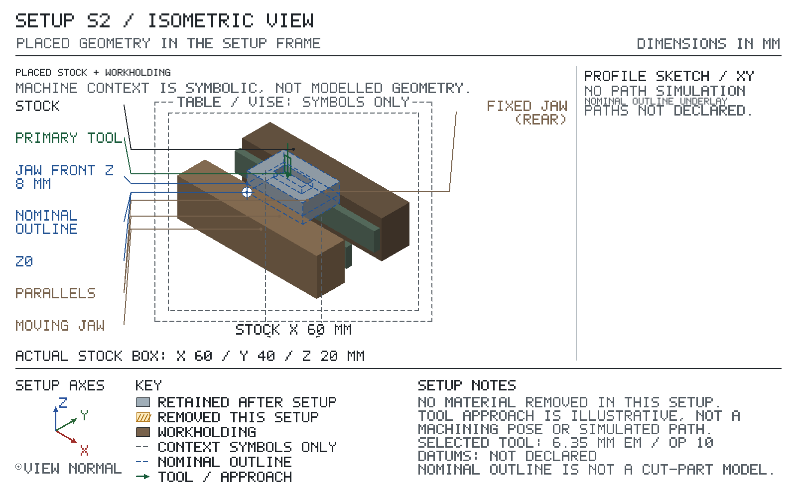

✗ STOP — do not run until resolved:
Drawing revision not confirmed — match the print revision first.
Setups S1, S2: STOP items on the setup page — do not run a setup until its STOPs are cleared.
Drawing material: ? not stated.
Speeds / feeds: no cited source — every op without a speed is a STOP.
Stock: rectangular bar 60.000 × 40.000 × 21.000 long. Authored 60 x 40 x 21 mm supply: 1 mm top allowance over the synthetic 20 mm block; the other five outer surfaces are supplied as-is. S1's numeric clearance is not CAM proof.
| setup | starts from | machine | holding |
|---|---|---|---|
| S1 | the stock blank | test-mill | STOP: not chosen |
| S2 | part as it arrives from Setup S1 | test-mill | vise |
| feature | limits |
|---|---|
| no toleranced requirement |
T# = tool number in that setup's TOOLS table. EM = endmill; CD = centre drill; DTI = test indicator; mic = micrometer. Keep the drawing at the bench.
Sign off: __________ First article / measured results: ____________________
✗ STOP — do not run until resolved:
Op 10 — a claimed internal corner is smaller than the selected cutter radius and the feature declares no corner radius max design admitting it.
Op 10 — no starting speed / feed
Op 10 — no Z target
? Not verified by the planner — confirm at the machine:
tool access (op 10); coordinates; machine envelope; holding clearance; headroom and clearance; holding details; tool reach (op 10); starting speeds / feeds (op 10); chuck / collet size; thin walls under clamping; tool / holder fit (op 10); axis travel; vise grip; DRO zero check.
Synthetic rough preparation clears top allowance and pocket before S2. The preparation cutter diameter and authored zero leave are declared; its other dimensions, holder and holding remain measurement debt.
Starts from: the stock blank — top Z ? not set, bottom Z ? not set.

| grip length mm |
|---|
| ? not set |
Coolant: none. Break edges 0.000 mm max.
| T | tool | insert / size / material | holder / station | ops |
|---|---|---|---|---|
| T1 | 8 mm EM | Ø8.000 | — | 10 |
| axis | touch / pick up | Axis Set | jog, no touch | must read | if reversed |
|---|
| SETUP S1 — sheet 1, back: operations continued | ||||||||
|---|---|---|---|---|---|---|---|---|
| op | do | feature | tool | rpm | feed | Z tip | direction | inspection: limit, gauge |
| 10 | rough pocket, leave 0.000 mm | T1 | STOP | STOP | STOP: Z target not set | ? | — | |
| STOP: a claimed internal corner is smaller than the selected cutter radius and the feature declares no corner radius max design admitting it.See note on S1 sheet 2 | ||||||||
Sign off: __________ First article / measured results: ____________________
? Not computed — check at the machine: spindle-to-table room (holding height not known); tool stickout and headroom (op 10); X travel; Y travel.
✗ STOP — do not run until resolved:
Op 10 — tool or holder hits the part or the holding
Op 10 — a claimed internal corner is smaller than the selected cutter radius and the feature declares no corner radius max design admitting it.
Op 10 — no starting speed / feed
? Not verified by the planner — confirm at the machine:
coordinates; machine envelope; headroom and clearance; starting speeds / feeds (op 10); axis travel; DRO zero check.
Top face up on 20 mm parallels; jaws along X clamp the 40 mm width across Y.
Starts from: part as it arrives from Setup S1 — top (pocket) at Z 20.000, bottom at Z 0.000.

| grip length mm | jaw top above parallels mm | jaw centre at X | parallels at (X, Y) |
|---|---|---|---|
| 6.000 | 8.000 | 30.000 | (30.000, 5.000); (30.000, 35.000) |
Coolant: none. Break edges 0.000 mm max.
| T | tool | insert / size / material | holder / station | ops |
|---|---|---|---|---|
| T1 | 6.35 mm EM | Ø6.350, 4 flutes, HSS | R8 collet | 10 |
| axis | touch / pick up | Axis Set | jog, no touch | must read | if reversed |
|---|
| SETUP S2 — sheet 1, back: operations continued | ||||||||
|---|---|---|---|---|---|---|---|---|
| op | do | feature | tool | rpm | feed | Z tip | direction | inspection: limit, gauge |
| 10 | finish pocket | T1 | STOP | STOP | Z → 14.000 | climb | — | |
| TIP 6.000 BELOW JAW TOP — STOPSTOP: tool or holder hits the part or the holdingSTOP: a claimed internal corner is smaller than the selected cutter radius and the feature declares no corner radius max design admitting it. | ||||||||
Sign off: __________ First article / measured results: ____________________
Jaw tops at Z 20.000; work top 0.000 mm above the jaws. Tool tips near the jaw tops are boxed on the op rows.
? Not computed — check at the machine: spindle-to-table room (holding height not known); tool stickout and headroom (op 10); X travel; Y travel.